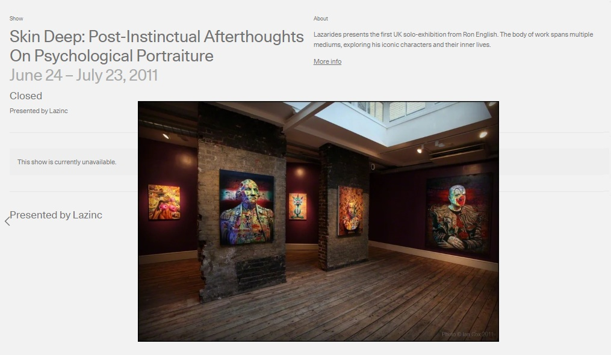
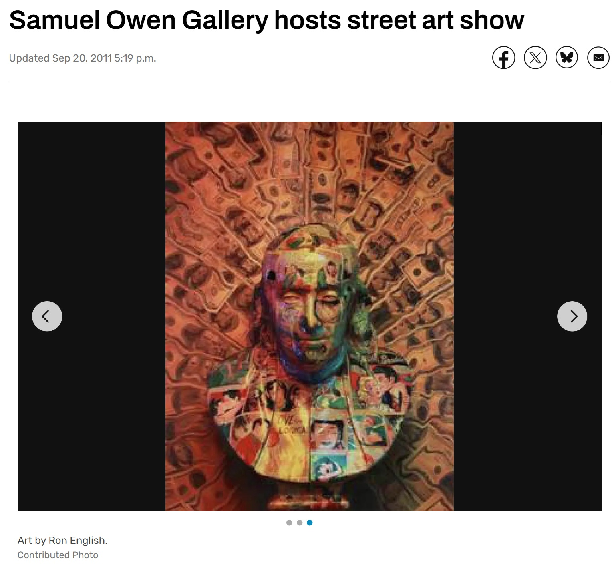

Exhibitions
Skin Deep: Post-Instinctual Afterthoughts on Psychological Portraiture, Lazarides Rathbone, London, UK, June 24–July 21, 2011.
On Every Street, Samuel Owen Gallery, Greenwich, Connecticut, US, October 6–November 3, 2011.
Literature
Ron English, Death and the Eternal Forever (Korero Press, 2014), p. 37. ISBN 978-0957664920.
Ron English, Status Factory: The Art of Ron English (San Francisco: Last Gasp of San Francisco, 2014), p. 178. ISBN 978-0867197891.
Ron English, Original Grin: The Art of Ron English (Paris: Cernunnos, 2019), p. 142. ISBN 978-2374950938.
Notes
This work appears on Artsy’s show page for Skin Deep: Post-Instinctual Afterthoughts On Psychological Portraiture, presented by Lazinc, available here, accessed April 17, 2026.
It also appears in studio photographs published in RJ Rushmore, “Studio visit with Ron English,” Vandalog, June 14, 2011, available here, accessed April 17, 2026.
Additional studio photographs showing the work were published in juggernut3, “Studio Visits: Ron English – ‘Skin Deep’ @ Lazarides Rathbone Place,” Arrested Motion, June 14, 2011, available here, accessed April 17, 2026.
The work also appears in “Samuel Owen Gallery hosts street art show,” Darien Times, September 20, 2011, available here, accessed April 17, 2026.
Ancillary Documentation




